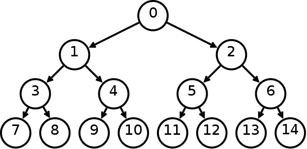
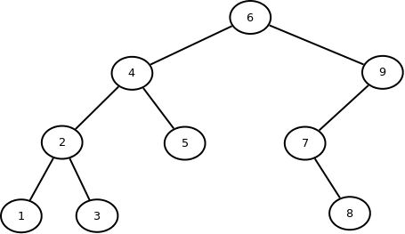
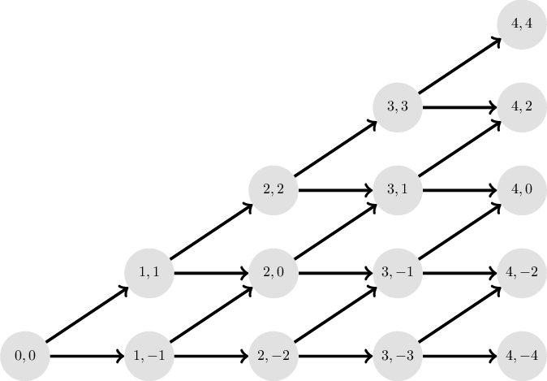
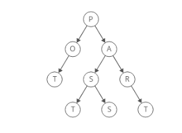
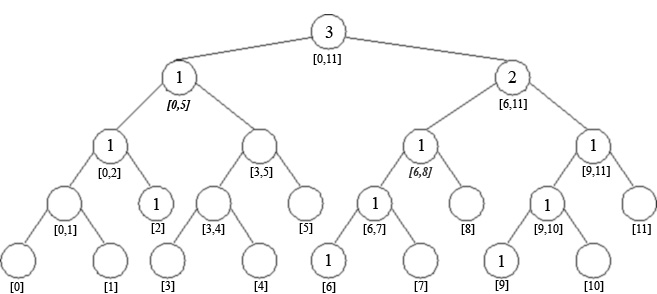
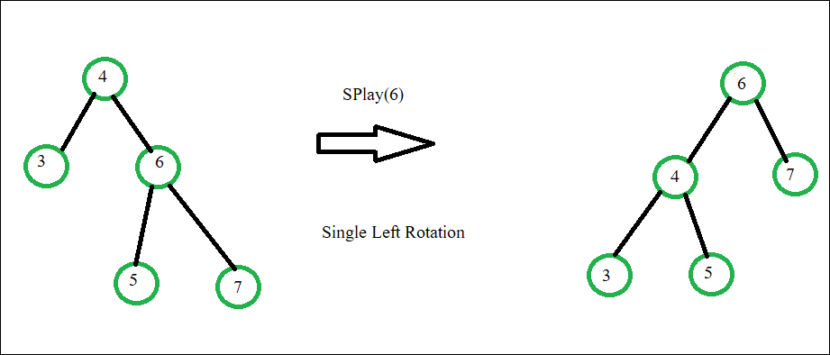

În teoria grafurilor există mai multe tipuri de arbori.
Iată câteva tipuri de arbori:
Arborele binar
Este unul dintre cele mai simple tipuri de arbori, utilizat frecvent în structurile de date și algoritmi. Fiecare nod
poate avea cel mult doi copii: un copil stânga și un copil dreapta.

Arborele binar de căutare

Este un arbore binar în care fiecare nod are o valoare, iar valorile sunt organizate astfel încât toate valorile din
subarborele stâng sunt mai mici decât valoarea nodului, iar toate valorile din subarborele drept sunt mai mari sau egale
cu valoarea nodului. Acest tip de arbore este utilizat în căutările eficiente și în alte operații asociate structurilor
de date.
Arborele AVL
Este un tip de arbore binar echilibrat în care diferența de înălțime între subarborii stâng și drept ai fiecărui nod
este cel mult 1. Acest lucru asigură că operațiile de inserare și ștergere în arbore sunt eficiente, cu un timp de
execuție logaritmic.
Arborele roșu-negru

Este un alt tip de arbore binar echilibrat în care fiecare nod este colorat fie roșu, fie negru, iar regulile de
echilibrare sunt menținute prin reechilibrarea culorilor și rotații. Arborele roșu-negru este folosit în implementările
eficiente ale structurilor de date, precum tabelele de dispersie.
Arborele binomial
Este un tip de arbore utilizat pentru reprezentarea structurilor de date și pentru implementarea unor algoritmi precum
coada de priorități și Heap-ul binomial.Structura sa se bazează pe noduri care au subarbori, denumiți arborele binomial de rang k, unde k este puterea a două în
conformitate cu regulile specifice binomiale.

Arborele Trie

Este un arbore utilizat pentru stocarea și căutarea eficientă a unui set de șiruri de caractere sau cuvinte.Fiecare nod din arbore reprezintă un caracter, iar fiecare cale de la rădăcină până la un nod terminal reprezintă un șir
de caractere.
Arborele segment
Este un arbore utilizat pentru a efectua interogări asupra unui interval sau a unui segment dintr-un șir de date.Utilizat frecvent în problemele de interogare a intervalului în algoritmi precum Segment Tree Query și Update.

Arborele Splay

Este utilizat pentru a optimiza frecvența de acces la date, mutând nodurile accesate recent la rădăcină.Operațiile de căutare, inserare și ștergere sunt eficiente, deoarece arborele tinde să aducă nodurile mai frecvent
accesate la nivelul superior al arborelui.
Hai să ne și jucăm un pic , încearcă să poziționezi arbori în ordinea corectă.